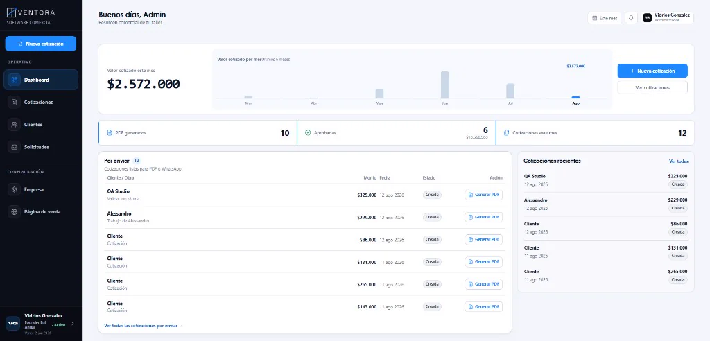
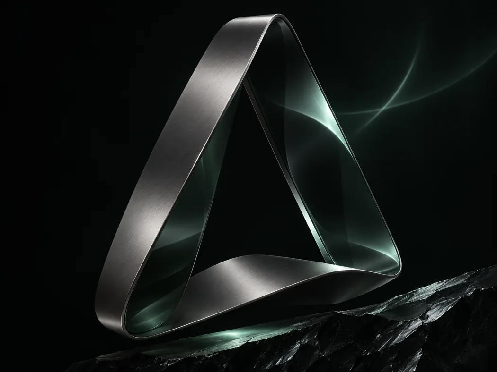

Software comercial
Ventora
Cotizaciones para talleres de vidrio, aluminio y PVC. Del registro de medidas al presupuesto para el cliente.
Ver Ventora (abre una pestaña nueva)

Desarrollo digital independiente
Desarrollo software, páginas web y automatizaciones con IA que ayudan a las empresas a ahorrar tiempo y trabajar mejor.

Portafolio
Dos sistemas en uso, creados para resolver necesidades distintas.
Software comercial
Cotizaciones para talleres de vidrio, aluminio y PVC. Del registro de medidas al presupuesto para el cliente.
Ver Ventora (abre una pestaña nueva)
Bitácora de operaciones
Un diario de trading para registrar operaciones y revisar su evolución en un mismo panel.
Ver aplicación (abre una pestaña nueva)
Enfoque
Primero identificamos dónde se repite el trabajo. Luego conectamos esos pasos para que tu equipo pueda dedicar más tiempo a atender cada proyecto.

Servicios
No. Atiendo desde la Región de Coquimbo y puedo colaborar de manera remota con empresas de todo Chile.
Depende del alcance, las integraciones y el mantenimiento requerido. Primero reviso lo que necesitas y luego preparo una propuesta con precio y entregables definidos.
Sí. En muchos casos es suficiente integrar las herramientas que ya utilizas. Recomendaré una solución nueva solo si aporta valor real.
Existen integraciones oficiales y flujos autorizados según el caso. Antes de implementarlos es necesario revisar permisos, costos, políticas de la plataforma y tratamiento de datos.
Contacto
Cuéntame qué haces hoy y qué te gustaría simplificar.